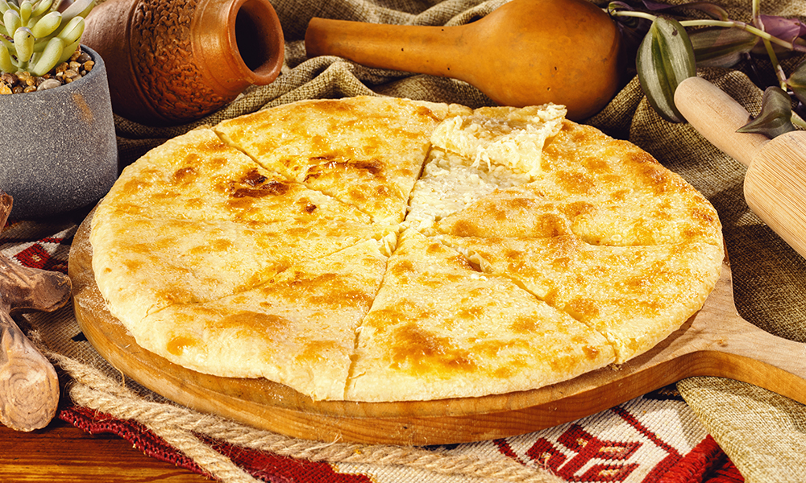

Khachapuri

Khachapuri is a traditional Georgian dish of cheese-filled bread.
Ingredients
Recipe instructions
- Add the grated cheese, one egg and 20 grams of butter to a mixing bowl.
- Knead the dough before using. Leave for 10 minutes and then make a circular shape, with a lip around the edge.
- Spread the cheese filling onto the middle of the dough.
- Fold the edges of the dough over the cheese filling.
- A rolling pin can also be used to flatten the dough.
- Lightly dust a baking tray with flour (to stop the khachapuri sticking) and put the khachapuri in a pre-heated oven for about 15 minutes at a medium temperature.
Go to Main Page